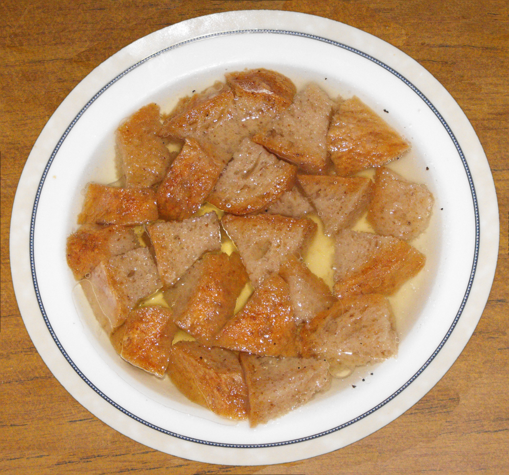

Wodzionka

Description
Very basic soup of Silesian kitchen.
Ingredients
- Stale bread
- Grounded garlic
- Onion
- Animal fat
Steps
- Boil some water
- Cut the bread and add to a bowl
- Add the rest of the ingredients
- Pour the boiling water over
- Notify your neighbours about ready dinner with a window pipe[1]